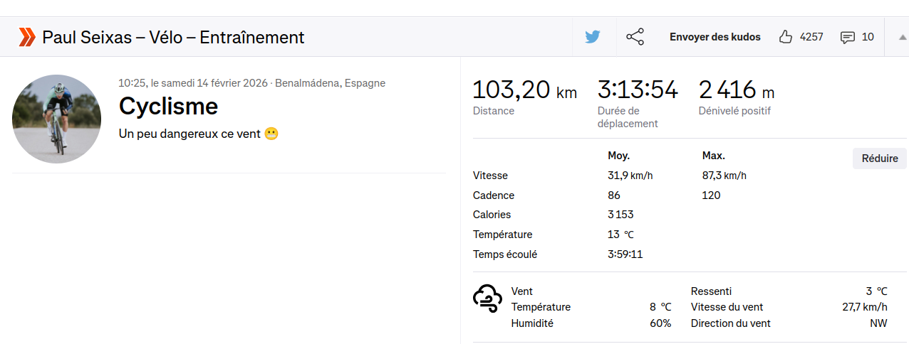

Hellish Conditions for Seixas?#
In February 2026, the Decathlon CMA CGM cycling team was at a training camp in southern Spain.
On February 14, after returning from a training session, rising French cycling star Paul Seixas posted the ride on his public Strava account with the comment: “A bit dangerous this wind 😬”

I immediately downloaded the GPX and measured the wind conditions along his ride…
[21]:
# Language is forced to English for consistent output in notebooks and tests, regardless of the user's locale.
import os
os.environ["OUTPUT_LANG"] = "en"
print("OUTPUT_LANG forced to en")
# home is expanded to the user's home directory for consistent file path handling across different environments.
home = os.path.expanduser("~")
OUTPUT_LANG forced to en
[16]:
# required imports for the notebook, including core simulation components, weather data handling, analysis tools, and visualization functions.
from datetime import timedelta, datetime
from zoneinfo import ZoneInfo
from biwipy.core import Simulator
from biwipy.core.cyclist_params import create_pro_profile
from biwipy.weather import WeatherProvider
from biwipy.weather.grib_finder import build_grib_list
from biwipy.analysis import RouteAnalyzer
from biwipy.analysis.anareswind import print_summary_statistics
1. Building the wind model#
We cannot use the time provided by the GPX file because it does not contain any timestamp. GPX files downloaded from Strava do not include timestamps unless it is a file associated with your account.
Since the GPX file does not contain timestamps, a replay simulation is not possible.
However, it is still possible to run a simulation in “future mode” by choosing the actual date and time of the ride.
This will allow us to assess the actual wind conditions encountered by Paul Seixas.
Therefore, we will use the date displayed on the Strava webpage.
[22]:
# Use the Strava start time
local_tz = ZoneInfo("Europe/Madrid")
departure_time = '2026-02-14 10:25:00'
t_start = datetime.fromisoformat(departure_time).replace(tzinfo=local_tz)
# Ride duration
estimated_ride_duration_h = 4
# Define the directory used to store GRIB files
hdir = home+"/data" # GRIB files stored in ~/data by default
gribs_list = build_grib_list(hdir, t_start, 1, estimated_ride_duration_h)
weather = WeatherProvider(gribs_list)
mygrib = weather.grib
print("Grib loaded")
Grib loaded
2. Parameters and simulator initialization#
We use typical pro-level parameters for this simulation. Paul Seixas’s weight is easy to find online.
We previously ran several simulations to tune a base power that gives realistic results (time and average speed). For this tuning, we selected v0 values consistent with the average speed reported by Strava and the elevation profile.
Remember that v0 is the speed corresponding to power P0 on flat terrain and without wind. Here, the route has significant elevation gain (> 2000 m) and strong wind. A v0 of 39 km/h is a realistic choice to obtain an average speed close to 32 km/h.
[18]:
pro = create_pro_profile()
procda = 0.28
procr = 0.0035
promass = 71
sim = Simulator(mygrib, behavior=pro, CdA=procda, Cr=procr, m=promass)
v0 = 39 / 3.6 # m/s
P0 = sim.P0_from_v0(v0)
print(f"Input parameters for the simulation: v0={v0*3.6:.2f} km/h, P0={P0:.1f} W, CdA={procda}, Cr={procr}, m={promass}")
Input parameters for the simulation: v0=39.00 km/h, P0=244.4 W, CdA=0.28, Cr=0.0035, m=71
3. Loading the GPX#
GPX preprocessing. Stop filtering is not relevant here because this GPX has no timestamps.
[25]:
filegpx=home+"/data/gpx/P20260214-103K-1025_Seixas.gpx"
analyzer = RouteAnalyzer()
segments, stats = analyzer.process_gpx(filegpx, verbose=True)
WARNING:biwipy.analysis.route_analyzer: 6 abnormal segments detected
4. Simulation launch#
Before running the simulation, we recall the Strava ride summary:
Distance: 103.20 km Time: 3:13:54 Elevation gain: 2416 m
Average: 31.9 km/h Max: 87.3 km/h
The simulation results are very close.
I cannot guarantee that the estimated power exactly matches the value measured by Paul Seixas’s power meter, but it seems realistic for a training ride.
[26]:
results = sim.simulate_future(segments, t_start, P0=P0)
print("\n--- Simulation du parcours avec le vent le " + str(t_start) + " ---")
print(f"\nAverage speed: {results.speed.avg:.2f} km/h - Moving Average speed: {results.speed.moving_avg:.2f} km/h - Max speed: {results.speed.max:.2f} km/h")
print(f"Average power: {results.power.avg:.1f} W" if results.power else "Average power: n/a")
print(f"temps= {str(timedelta(seconds=int(results.time.total_seconds)))} , longueur= {results.distance.total_km:.2f} km")
--- Simulation du parcours avec le vent le 2026-02-14 10:25:00+01:00 ---
Average speed: 31.81 km/h - Moving Average speed: 31.81 km/h - Max speed: 88.05 km/h
Average power: 270.0 W
temps= 3:14:15 , longueur= 102.97 km
4. Wind analysis#
The ride summary gives a WindScore grade of F.
This grade is driven by both safety and performance criteria.
[27]:
print_summary_statistics(results, "Parcours de Seixas du 14 février 2026 avec vent")
============================================================
STATISTICS - Parcours de Seixas du 14 février 2026 avec vent
============================================================
📏 Total distance: 102.97 km
⏱️ Total time: 03:14:15
🚴 Average speed: 31.81 km/h (max=88.05 km/h)
⚡ Average power: 270.0 W
💨 Wind (TWS and TWD):
Mean: 21.79 km/h - Direction: 327° (NNW)
Min: 15.12 km/h
Max: 25.81 km/h
💨 Gusts:
Mean: 32.19 km/h
Min: 26.86 km/h (at km 83.00)
Max: 38.20 km/h (at km 0.23)
⛰️ Terrain slope:
Mean: 2.24 %
Min (smoothed 100m): -16.28% (at km 71.97)
Max (smoothed 100m): 14.98% (at km 65.41)
Elevation gain: 2306 m
Elevation loss: -2346 m
🌬️ Virtual slope (wind):
Mean: 0.26%
Min (smoothed 100m): -8.69% (at km 100.77)
Max (smoothed 100m): 6.86% (at km 15.60)
Positive virtual elevation: 1222 m
Negative virtual elevation: -1550 m
📊 Effective slope (terrain + wind):
Mean: 2.49%
Min (smoothed 100m): -20.19% (at km 95.03)
Max (smoothed 100m): 15.77% (at km 65.42)
Positive effective elevation: 3528 m
Negative effective elevation: -3896 m
🎯 Wind along trajectory:
Headwind: 49.8% (51.24 km) - Mean: 15.63 km/h
Tailwind: 50.2% (51.71 km) - Mean: -14.75 km/h
Headwind min: 0.04 km/h (at km 92.82)
Headwind max: 28.58 km/h (at km 0.54)
Tailwind min: -0.04 km/h (at km 31.71)
Tailwind max: -27.79 km/h (at km 2.43)
🏁 WindScore:
Final grade: F
Reason: safety+performance
Performance: F (score=-7.762)
Safety: F (danger=7)
============================================================
============================================================
5. Conclusion#
The main reasons for this poor safety rating are:
strong gusts,
high average wind speed (TWS),
high lateral instability (crosswind).
Paul Seixas was right to highlight how dangerous the wind was. Beyond his impressive performance for his age, this also shows strong maturity and risk awareness.
[9]:
print(f"Safety danger score of {results.wind_score.safety_danger_score} out of a maximum of 7\nReasons:")
gust_max_kmh = results.gusts.max_kmh
print(f" Gust max: {gust_max_kmh:.2f} km/h")
crosswind_avg_kmh = results.crosswind.avg_kmh
print(f" Crosswind average: {crosswind_avg_kmh:.2f} km/h")
wind_avg_kmh = results.wind.tws.avg_kmh
print(f" TWS average: {wind_avg_kmh:.2f} km/h")
Safety danger score of 7 out of a maximum of 7
Reasons:
Gust max: 38.20 km/h
Crosswind average: 14.07 km/h
TWS average: 21.79 km/h